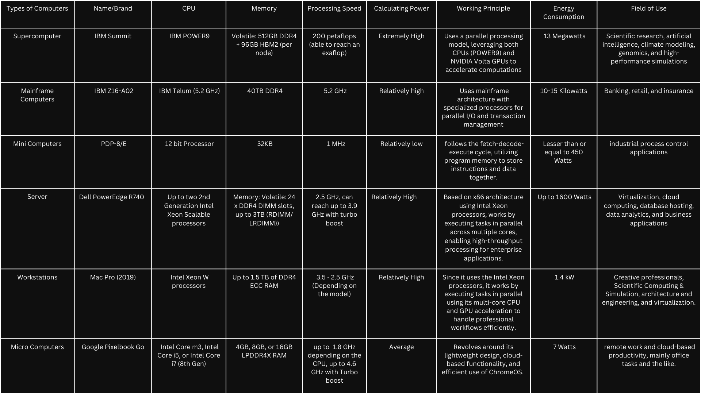

Introduction
The motherboard is the heart of the computer, as it connects all the different components of the system (Tomljanovic & Kurelovic, 2013).
It is important for the functionality as it is the core component that facilitates communication between the processor, memory, storage, and peripheral devices.
With the rapid development of technology, it is no surprise that hardware components, especially motherboards, have evolved significantly over the years.
What was once bulky with limited functions has now are now smaller, more efficient, and multifunctional.
This comparative study will examine the evolution of different motherboard form factors throughout the years, exploring how these changes were driven by technological advancements and the shifting needs of users.
By understanding the reasons behind the creation of each form factor, we can gain deeper insight as to how these motherboards have shaped modern computing as a whole.
Super Computer
IBM Summit (4608 nodes)
The IBM Summit is the former fastest supercomputer, holding the number 1 position on this list from November 2018 to June 2020.
It’s a supercomputer that was designed to “push the boundaries of computing and human understanding”.
It has been utilized for a lot of different uses, primarily in the field of medicine.
CPU: IBM POWER9 (2/node)
Memory: 512GB DDR4 + 96GB HBM2 (per node)
Processing Speed: 200 petaflops (able to reach an exaflop)
Calculating Power: Extremely High, designed for exascale computing
Working Principle: Uses a parallel processing model, leveraging both CPUs (POWER9) and NVIDIA Volta GPUs to accelerate computations
Energy Consumption: 13 Megawatts
Field of Use: Primarily used for scientific research, artificial intelligence, climate modeling, genomics, and high-performance simulations
Mainframe Computer
IBM Z16-A02
The IBM Z16-A02 is the latest iteration of the Z mainframes of IBM.
It features the esteemed IBM Telum Processor, which is designed to help customers achieve business insights at scale across banking,
finance, trading, insurance applications, and customer interactions.
CPU: IBM Telum (5.2 GHz)
Memory: 40TB DDR4
Processing Speed: 5.2 GHz
Calculating Power: Relatively high
Working Principle: Uses mainframe architecture with specialized processors for parallel I/O and transaction management
Energy Consumption: 10-15 Kilowatts
Field of Use: Typically used in industries that require high availability, security, and scalability, such as banking, retail, and insurance
Mini Computer
PDP-8/E
The PDP-8/E is a Mini Computer that is primarily designed as a general-purpose computer.
Relative to its time, the PDP-8/E was used to handle contemporary telecommunications and text.
It is a fast, compact, and inexpensive computer that is designed to meet the needs of the average user.
CPU: 12-bit Processor
Memory: 32KB
Processing Speed: 1 MHz
Calculating Power: Relatively low, designed for simple arithmetic and logical operations
Working Principle: Follows the fetch-decode-execute cycle, utilizing program memory to store instructions and data together
Energy Consumption: Lesser than or equal to 450 Watts
Field of Use: Designed for industrial process control applications.
Although it is considered to be slow by today’s standards, its contribution to the medical field in terms of data processing was significant.
Server
Dell PowerEdge R740
The Dell PowerEdge R740 is a server computer that capitalizes on its dual-socket 2U rack system to accelerate application performance.
It is optimized for application performance and storage scalability, which gives it an edge in comparison to other server computers in its range.
CPU: Up to two 2nd Generation Intel Xeon Scalable processors
Memory: Volatile: 24 x DDR4 DIMM slots, up to 3TB (RDIMM/LRDIMM)
Processing Speed: 2.5 GHz, can reach up to 3.9 GHz with turbo boost
Calculating Power: Relatively High
Working Principle: Based on x86 architecture using Intel Xeon processors, works by executing tasks in parallel across multiple cores, enabling high-throughput processing for enterprise applications
Energy Consumption: Up to 1600 Watts
Field of Use: Commonly used for virtualization, cloud computing, database hosting, data analytics, and business applications. Also suitable for applications requiring high availability, such as ERP (Enterprise Resource Planning), and CRM (Customer Relationship Management)
Workstation
Mac Pro (2019)
The Mac Pro (2019) is the most powerful computer workstation that Apple offers.
It specializes in handling extremely demanding processes that users require, such as video editing, 3D rendering, and similar tasks.
Equipped with the M2 Ultra chip, it can power through most workflows at unprecedented scales, providing users with highly efficient speeds for their work.
CPU: Intel Xeon W processors, configurations with up to 28 cores per processor
Memory: Up to 1.5 TB of DDR4 ECC RAM
Processing Speed: 3.5 - 2.5 GHz (Depending on the model)
Calculating Power: Relatively High
Working Principle: Based on the x86-64 architecture using Intel Xeon processors, works by executing tasks in parallel using its multi-core CPU and GPU acceleration to handle professional workflows efficiently
Energy Consumption: 1.4 kW
Field of Use: Suited for Creative professionals, Scientific Computing & Simulation, architecture and engineering, and virtualization
Micro Computer
Google Pixelbook Go
The Google Pixelbook Go is a portable touchscreen laptop developed by Google that runs on ChromeOS.
It is designed for people who travel frequently or need a portable computer system, such as students or office workers.
CPU: Intel Core m3, Intel Core i5, or Intel Core i7 (8th Gen)
Memory: 4GB, 8GB, or 16GB LPDDR4X RAM
Processing Speed: Up to 1.8 GHz depending on the CPU, up to 4.6 GHz with Turbo Boost
Calculating Power: Average, designed for light office tasks and multitasking
Working Principle: The thing that sets Chromebooks apart from other laptops is its usage of cloud services for applications and storage, making it a lightweight and efficient device for users who primarily use web-based applications. It also uses the Chrome OS for its operating system.
Energy Consumption: 7 Watts
Field of Use: Suitable for remote work and cloud-based productivity, mainly office tasks and the like
Table
A table for better demonstration:

References
Oak Ridge Leadership Computing Facility. (n.d.). Summit. https://www.olcf.ornl.gov/olcf-resources/compute-systems/summit/
Software AG. (n.d.). Exploring the IBM z16 mainframe. https://www.softwareag.com/en_corporate/blog/ibm-z16.html
PDP-8 Online. (n.d.). PDP-8 emulator project. https://www.pdp8online.com/pdp8em/pdp8em.shtml
Dell Technologies. (n.d.). Dell EMC PowerEdge R740 technical specifications. https://i.dell.com/sites/csdocuments/shared-content_data-sheets_documents/en/poweredge-r740-spec-sheet.pdf
Apple Inc. (n.d.). Mac Pro (2019): Technical specifications. https://support.apple.com/en-ph/118461
Google Support. (n.d.). About Pixelbook Go specifications. https://support.google.com/pixelbook/answer/9481398?hl=en
IBM. (n.d.). IBM z16: The next-generation mainframe. https://www.ibm.com/products/z16
Digital Equipment Corporation. (1972). PDP-8 small computer handbook. https://www.grc.com/pdp-8/docs/PDP-8_Small_Computer_Handbook_1972.pdf
Bharadwaj, K. R., & Wadhwa, C. (2015). Introduction to computer. ResearchGate. https://www.researchgate.net/publication/283540479_INTRODUCTION_TO_COMPUTER